Move beyond misleading averages. Master distribution shapes (symmetric, skewed, bimodal), box plots & 1.5×IQR outlier detection, violin plots, correlation heatmaps, scientific error bars, and 95% confidence intervals.
Real-world data science aur scientific engineering mein sirf ek number — "Average" (Mean) — aksar sach ko chhipa deta hai! Statistical visualization ka maqsad raw data ke shape, spread, variability, aur uncertainty ko visible banana hai.
Sochiye ek college ke do sections (Class Alpha aur Class Beta) hain. Dono ka class average exact 72% hai! Lekin jab aap unka distribution graph dekhte hain, toh reality bilkul alag nikal kar aati hai:
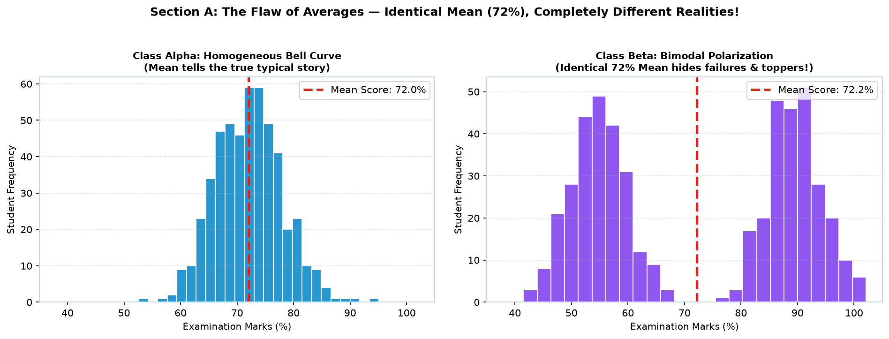
| Plot Type | Core Question It Answers | Best Use Case |
|---|---|---|
| Histogram | Data values kis frequency mein distributed hain? | Single continuous variable ki shape & spread dekhna. |
| Box Plot | Median, quartiles, aur extreme outliers kahan hain? | Multiple groups ya departments ko side-by-side compare karna. |
| Violin Plot | Kya distribution mein multiple peaks (multimodal) hain? | Complex density distributions jahan box plot shape nahi dikha pata. |
| Scatter Plot | Kya do variables ke beech koi mathematical relationship hai? | Study hours vs. Marks, Price vs. Demand. |
| Correlation Heatmap | Kaun-kaun se variables aapas mein strongly correlated hain? | Multi-dimensional feature matrix analysis. |
| Error Bar Plot | Lab measurements mein kitna uncertainty ya margin of error hai? | Physical experiments, IoT sensor trials, machine benchmarks. |
import matplotlib.pyplot as plt
import numpy as np
np.random.seed(42)
# Class Alpha: Normal curve around 72
alpha = np.random.normal(loc=72, scale=6, size=500)
# Class Beta: Bimodal (polarized into 55 and 89)
beta = np.concatenate([np.random.normal(55, 5, 250), np.random.normal(89, 5, 250)])
fig, (ax1, ax2) = plt.subplots(1, 2, figsize=(10, 4))
ax1.hist(alpha, bins=25, color='#0284c7', edgecolor='white')
ax1.axvline(np.mean(alpha), color='#dc2626', linestyle='--', lw=2, label=f'Mean: {np.mean(alpha):.1f}%')
ax1.set_title("Class Alpha: Unimodal Normal")
ax1.legend()
ax2.hist(beta, bins=25, color='#7c3aed', edgecolor='white')
ax2.axvline(np.mean(beta), color='#dc2626', linestyle='--', lw=2, label=f'Mean: {np.mean(beta):.1f}%')
ax2.set_title("Class Beta: Polarized Bimodal")
ax2.legend()
plt.tight_layout()
plt.show()Ek distribution humein batata hai ki data ke values number line par kis tarah spread hain. Teen core architectural shapes hoti hain:
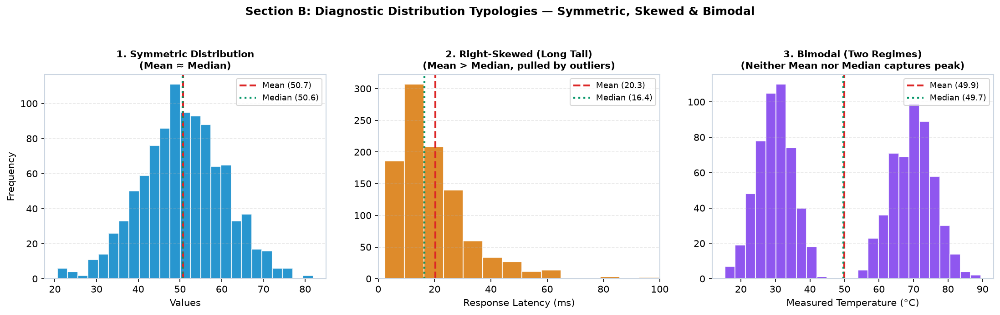
Mean ≈ Median hota hai.Mean > Median).import matplotlib.pyplot as plt
import numpy as np
# Log-normal distribution simulates API response times
latency = np.random.lognormal(mean=3.0, sigma=0.6, size=1000)
mean_val = np.mean(latency)
median_val = np.median(latency)
fig, ax = plt.subplots(figsize=(8, 4))
ax.hist(latency, bins=35, color='#d97706', edgecolor='white', alpha=0.85)
ax.axvline(mean_val, color='#dc2626', linestyle='--', lw=2, label=f'Mean ({mean_val:.1f}ms)')
ax.axvline(median_val, color='#059669', linestyle=':', lw=2.5, label=f'Median ({median_val:.1f}ms)')
ax.set_title("API Gateway Response Latency (Right-Skewed)", fontweight='bold')
ax.set_xlabel("Latency (ms)")
ax.set_ylabel("Request Count")
ax.grid(True, linestyle='--', alpha=0.3)
ax.legend()
plt.show()ax.hist() data ko discrete intervals (bins) mein baantkar har bucket ki count calculate karta hai. Lekin bin width select karna ek critical decision hai:
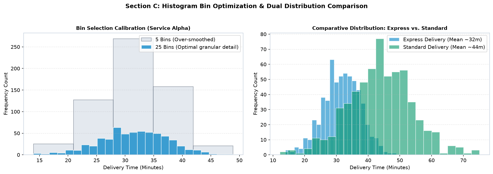
bins=5) honge, toh distribution ka inner structure chhip jayega (Over-smoothing).bins=100) honge, toh data spiky aur noisy ho jayega.bins = int(1 + 3.322 * np.log10(N))) ya 20–30 bins general datasets ke liye best starting point hai.
import matplotlib.pyplot as plt
import numpy as np
express = np.random.normal(loc=30, scale=5, size=500)
standard = np.random.normal(loc=45, scale=8, size=500)
fig, ax = plt.subplots(figsize=(8, 4.5))
# Use alpha=0.6 so both distributions remain visible without hiding each other
ax.hist(express, bins=25, color='#0284c7', edgecolor='white', alpha=0.6, label='Express Service')
ax.hist(standard, bins=25, color='#059669', edgecolor='white', alpha=0.6, label='Standard Courier')
ax.set_title("Comparative Package Delivery Times", fontweight='bold')
ax.set_xlabel("Delivery Time (Minutes)")
ax.set_ylabel("Order Count")
ax.grid(True, linestyle='--', alpha=0.3, axis='y')
ax.legend()
plt.show()Box Plot (Box-and-Whisker plot) John Tukey dwara banaya gaya statistical summary plot hai jo 5 key numbers par aadharit hota hai:
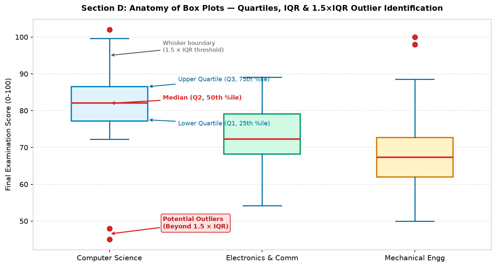
IQR = Q3 - Q1. Ye middle 50% data ka spread hota hai.1.5 × IQR tak jaati hain.Q3 + 1.5×IQR se oopar ya Q1 - 1.5×IQR se neeche girte hain, unhe isolated red dots se flag kiya jata hai!import matplotlib.pyplot as plt
import numpy as np
cs = np.concatenate([np.random.normal(82, 6, 80), [45, 48]]) # with outliers
ec = np.random.normal(74, 8, 80)
me = np.random.normal(68, 9, 80)
fig, ax = plt.subplots(figsize=(8, 5))
box = ax.boxplot([cs, ec, me], tick_labels=['Computer Science', 'Electronics', 'Mechanical'],
patch_artist=True, widths=0.5,
medianprops=dict(color='#dc2626', lw=2),
flierprops=dict(marker='o', markerfacecolor='#dc2626', markersize=7))
colors = ['#e0f2fe', '#d1fae5', '#fef3c7']
for patch, color in zip(box['boxes'], colors):
patch.set_facecolor(color)
ax.set_title("Department Examination Score Distribution", fontweight='bold')
ax.set_ylabel("Marks (0-100)")
ax.grid(True, linestyle='--', alpha=0.35, axis='y')
plt.show()Box plots summarize toh achha karte hain, lekin ek bada limitation hai: Box plots internal shape nahi dikha sakte! Agar ek distribution mein do alag-alag peaks (bimodal) hain, toh box plot mein wo simple square box jaisa hi dikhega. Yahan kaam aata hai Violin Plot!
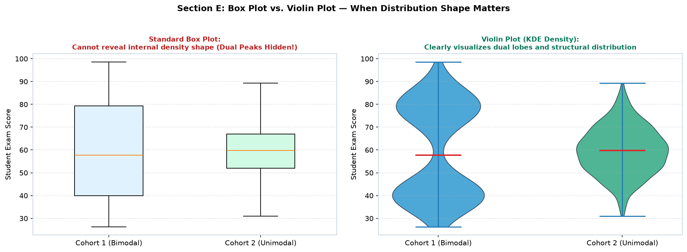
import matplotlib.pyplot as plt
import numpy as np
# Bimodal cohort
cohort1 = np.concatenate([np.random.normal(40, 5, 200), np.random.normal(80, 6, 200)])
# Normal cohort
cohort2 = np.random.normal(60, 10, 400)
fig, ax = plt.subplots(figsize=(8, 4.8))
parts = ax.violinplot([cohort1, cohort2], positions=[1, 2], showmedians=True)
for pc in parts['bodies']:
pc.set_facecolor('#0284c7')
pc.set_edgecolor('#0369a1')
pc.set_alpha(0.7)
parts['cmedians'].set_color('#dc2626')
ax.set_xticks([1, 2])
ax.set_xticklabels(['Cohort 1 (Bimodal)', 'Cohort 2 (Unimodal)'])
ax.set_title("Violin Plot Density Representation", fontweight='bold')
ax.set_ylabel("Exam Score")
ax.grid(True, linestyle='--', alpha=0.3, axis='y')
plt.show()Jab hum do continuous numerical variables ke beech ka correlation explore karte hain, toh Scatter Plot sabse pehla diagnostic tool hota hai.
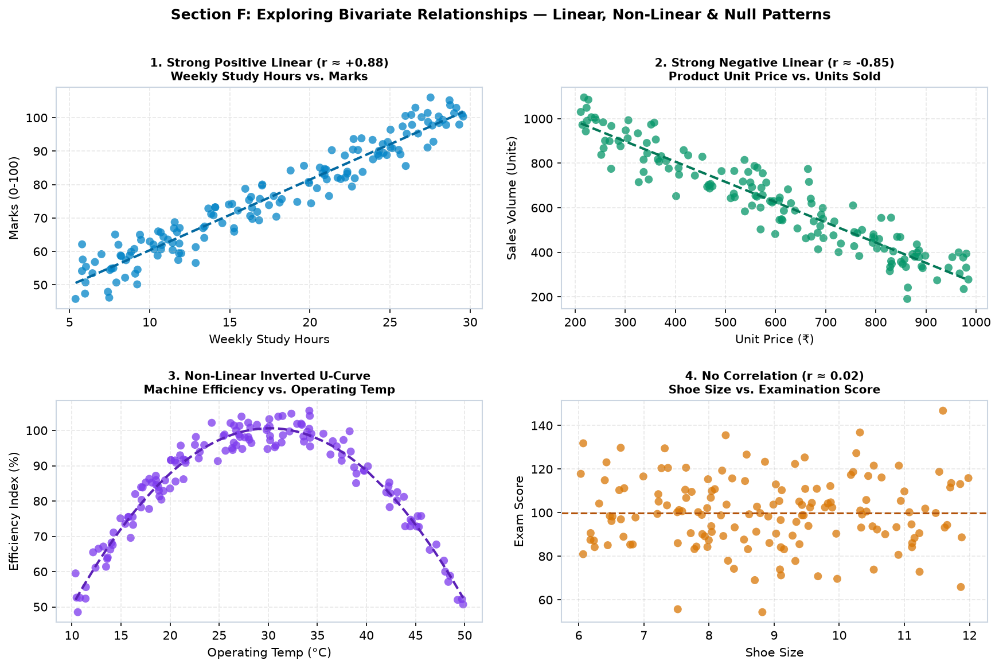
import matplotlib.pyplot as plt
import numpy as np
hours = np.random.uniform(5, 30, 120)
marks = 40 + 2.0 * hours + np.random.normal(0, 4, 120)
fig, ax = plt.subplots(figsize=(8, 4.5))
ax.scatter(hours, marks, color='#0284c7', alpha=0.75, s=40)
# Calculate linear regression trendline: y = mx + c
m, c = np.polyfit(hours, marks, 1)
h_sorted = np.sort(hours)
ax.plot(h_sorted, m * h_sorted + c, '--', color='#0369a1', lw=2, label=f'Trend: y={m:.1f}x+{c:.0f}')
ax.set_title("Study Hours vs. Examination Marks", fontweight='bold')
ax.set_xlabel("Weekly Study Hours")
ax.set_ylabel("Marks (0-100)")
ax.grid(True, linestyle='--', alpha=0.35)
ax.legend()
plt.show()Pearson Correlation Coefficient (r) do variables ke beech linear relationship ki strength aur direction measure karta hai (-1.0 se +1.0 ke beech). Multiple features ke pairwise correlation ko summarize karne ke liye Matplotlib ka ax.imshow() use karke heatmap banaya jata hai.
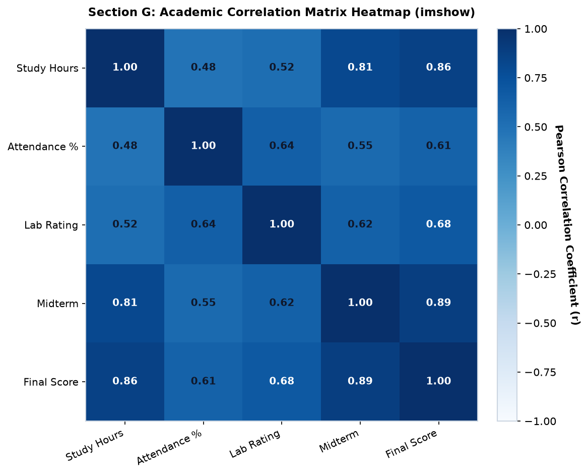
import matplotlib.pyplot as plt
import numpy as np
# Correlation matrix
corr = np.array([
[1.00, 0.48, 0.81, 0.86],
[0.48, 1.00, 0.55, 0.61],
[0.81, 0.55, 1.00, 0.89],
[0.86, 0.61, 0.89, 1.00]
])
labels = ['Hours', 'Attendance', 'Midterm', 'Final']
fig, ax = plt.subplots(figsize=(6, 5))
cax = ax.imshow(corr, cmap='Blues', vmin=-1.0, vmax=1.0)
fig.colorbar(cax, ax=ax)
ax.set_xticks(range(len(labels)))
ax.set_yticks(range(len(labels)))
ax.set_xticklabels(labels)
ax.set_yticklabels(labels)
# Print values inside matrix cells
for i in range(len(labels)):
for j in range(len(labels)):
val = corr[i, j]
color = 'white' if val > 0.65 else '#0f172a'
ax.text(j, i, f"{val:.2f}", ha='center', va='center', color=color, fontweight='bold')
ax.set_title("Feature Correlation Heatmap", fontweight='bold')
plt.tight_layout()
plt.show()Scientific experiments aur physical sensor measurements mein kabhi bhi exact single value nahi aati; har reading ke sath uncertainty judi hoti hai. ax.errorbar() se hum har point ke aas-paas ka error range display karte hain.
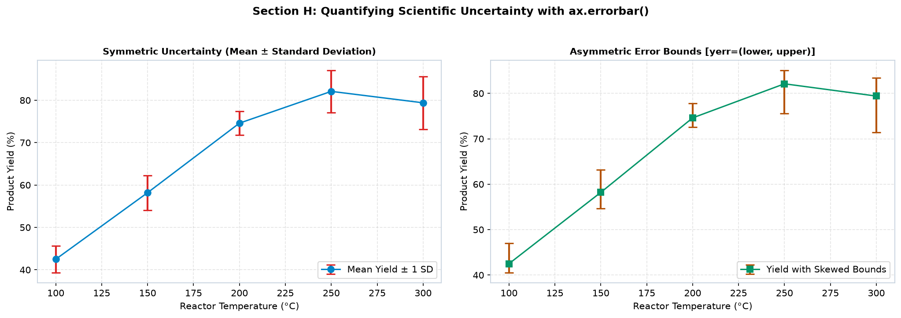
yerr=...: Vertical error bounds. Agar single array dein toh symmetric error banega; agar [lower, upper] dein toh asymmetric error banega.capsize=5: Error bar ke ends par horizontal cross-bar add karta hai.fmt='-o': Line aur marker format string (e.g. solid line with circle markers).ecolor='#dc2626': Error bars ka color line se alag set karne ke liye.import matplotlib.pyplot as plt
import numpy as np
temp = np.array([100, 150, 200, 250, 300])
yield_mean = np.array([42.5, 58.2, 74.6, 82.1, 79.4])
yield_sd = np.array([3.2, 4.1, 2.8, 5.0, 6.2]) # Standard Deviation
fig, ax = plt.subplots(figsize=(8, 4.5))
ax.errorbar(temp, yield_mean, yerr=yield_sd, fmt='-o', color='#0284c7', ecolor='#dc2626',
capsize=5, capthick=1.5, lw=2, label='Mean Yield ± 1 SD')
ax.set_title("Chemical Reactor Yield with Measurement Uncertainty", fontweight='bold')
ax.set_xlabel("Operating Temp (°C)")
ax.set_ylabel("Product Yield (%)")
ax.grid(True, linestyle='--', alpha=0.35)
ax.legend()
plt.show()Jab aapke paas poore population ka data nahi hota (jaise sabhi 50,000 customers ka nahi, sirf 100 ka sample hai), toh Confidence Interval (CI) batata hai ki population ka asli mean kis range ke andar aane ki 95% probability hai.
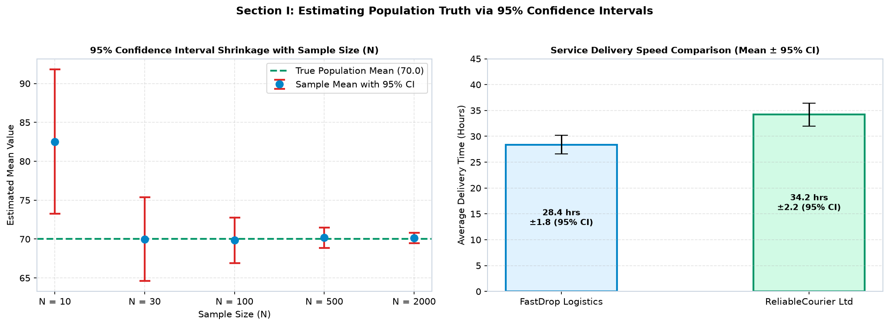
import matplotlib.pyplot as plt
providers = ['FastDrop Logistics', 'ReliableCourier Ltd']
mean_times = [28.4, 34.2]
ci_95 = [1.8, 2.2] # 95% Confidence interval half-widths
fig, ax = plt.subplots(figsize=(7, 4.5))
ax.bar(providers, mean_times, yerr=ci_95, capsize=7, color=['#e0f2fe', '#d1fae5'],
edgecolor=['#0284c7', '#059669'], lw=2, width=0.45)
ax.set_title("Delivery Speed with 95% Confidence Intervals", fontweight='bold')
ax.set_ylabel("Average Delivery Time (Hours)")
ax.set_ylim(0, 45)
ax.grid(True, linestyle='--', alpha=0.3, axis='y')
plt.show()Scientific experiments mein jab X-axis ordered sequence (jaise continuous time ya pressure increments) hota hai, toh line plot ke sath model tolerance bands draw karna standard practice hai.
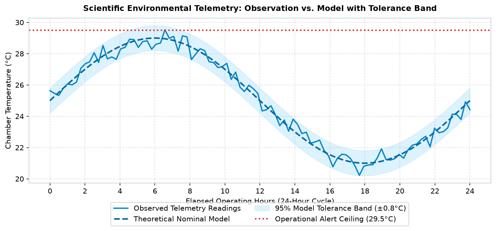
import matplotlib.pyplot as plt
import numpy as np
time_hrs = np.linspace(0, 24, 50)
nominal = 25.0 + 4.0 * np.sin(np.pi * time_hrs / 12)
lower = nominal - 0.8
upper = nominal + 0.8
fig, ax = plt.subplots(figsize=(8.5, 4.5))
ax.plot(time_hrs, nominal, color='#0284c7', lw=2, label='Nominal Model')
ax.fill_between(time_hrs, lower, upper, color='#bae6fd', alpha=0.5, label='95% Model Tolerance Band (±0.8°C)')
ax.set_title("Environmental Chamber Temperature Stability", fontweight='bold')
ax.set_xlabel("Elapsed Operating Hours")
ax.set_ylabel("Temperature (°C)")
ax.grid(True, linestyle='--', alpha=0.35)
ax.legend()
plt.show()Scientific reporting ka golden design pattern hai: Sequence plot + Marginal distribution side-by-side.
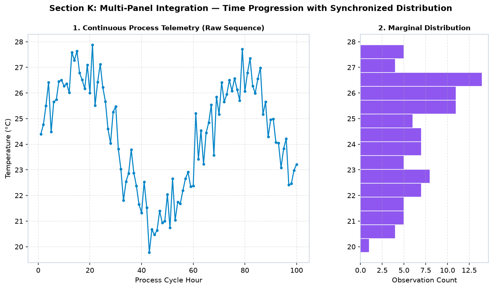
import matplotlib.pyplot as plt
import matplotlib.gridspec as gridspec
import numpy as np
hours = np.linspace(1, 100, 100)
temp = 24.0 + 3.0 * np.sin(hours / 10) + np.random.normal(0, 0.7, 100)
fig = plt.figure(figsize=(10, 5))
gs = gridspec.GridSpec(1, 2, width_ratios=[2.5, 1.0], wspace=0.25)
# Left: Time series
ax1 = fig.add_subplot(gs[0])
ax1.plot(hours, temp, color='#0284c7', marker='o', markersize=3, lw=1.5)
ax1.set_title("Process Telemetry Stream", fontweight='bold')
ax1.set_xlabel("Cycle Hour")
ax1.set_ylabel("Temperature (°C)")
ax1.grid(True, linestyle='--', alpha=0.35)
# Right: Rotated Marginal Histogram
ax2 = fig.add_subplot(gs[1], sharey=ax1)
ax2.hist(temp, bins=15, orientation='horizontal', color='#7c3aed', edgecolor='white')
ax2.set_title("Marginal Spread", fontweight='bold')
ax2.set_xlabel("Count")
ax2.grid(True, linestyle='--', alpha=0.35, axis='x')
plt.tight_layout()
plt.show()Ek unusual reading dekhkar student aksar bolte hain: "Ye toh outlier hai, isko code se delete kar dete hain!" Warning: Kabhi bhi outliers ko bina investigate kiye delete mat karo! Anomaly detection (fraud, server crash, medical alert) hi aksar data science ka sabse valuable insight hota hai.
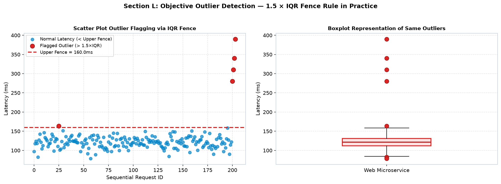
q1 = np.percentile(data, 25)
q3 = np.percentile(data, 75)
iqr = q3 - q1
upper_fence = q3 + 1.5 * iqr
lower_fence = q1 - 1.5 * iqr
# Points beyond fences are flagged as potential outliers
outliers = data[(data > upper_fence) | (data < lower_fence)]Scientific data present karte waqt integrity aur clarity sabse badi priority honi chahiye. Deceptive practices se bachein:
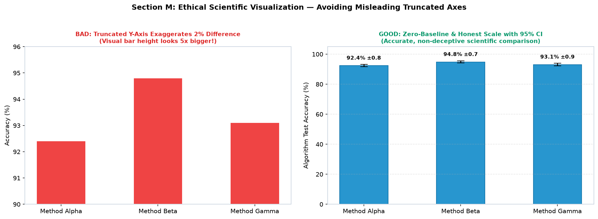
| Deceptive Practice (Avoid!) | Kyun Galat Hai? | Honest Scientific Practice |
|---|---|---|
| Truncated Y-Axis on Bar Charts | 90% se shuru karke 2% difference ko 5 guna bada dikhana reader ko cheat karta hai. | Bar charts must start at zero (ylim=(0, max)). |
| Missing Measurement Units | Reader ko nahi pata ki '24' Celsius hai ya Fahrenheit ya Hours. | Always label with units: Temperature (°C), Latency (ms). |
| Arbitrary Unlabeled Error Bars | Reader ko pata nahi chalta ki error bar Standard Deviation hai ya CI. | Always state in caption: "Error bars represent ±1 Standard Deviation". |
Scenario: 300 engineering students ke exam data ka comprehensive statistical evaluation: overall score distribution, department-wise quartiles, study dedication regression correlation, aur correlation matrix heatmap.
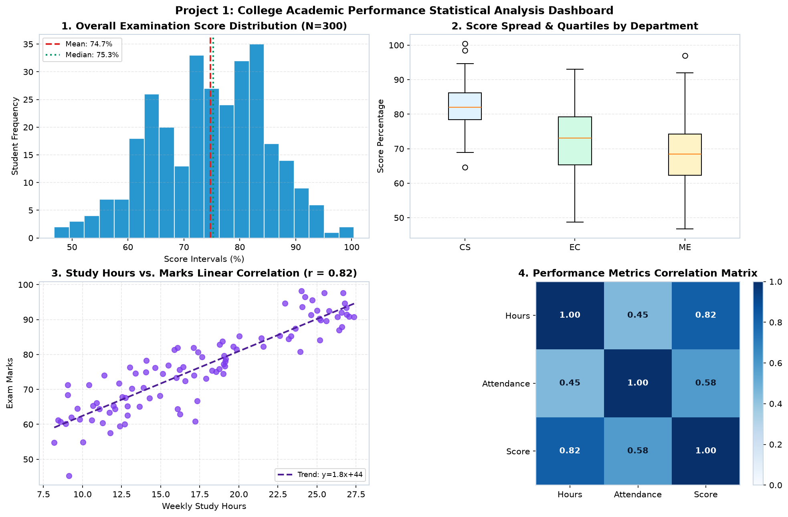
import matplotlib.pyplot as plt
import numpy as np
fig, axes = plt.subplots(2, 2, figsize=(12, 8), constrained_layout=True)
# 1. Distribution
scores = np.random.normal(75, 9, 300)
axes[0, 0].hist(scores, bins=20, color='#0284c7', edgecolor='white')
axes[0, 0].axvline(np.mean(scores), color='#dc2626', linestyle='--', label=f'Mean: {np.mean(scores):.1f}%')
axes[0, 0].set_title("1. Score Distribution (N=300)", fontweight='bold')
axes[0, 0].legend()
# 2. Department Boxplot
d1, d2, d3 = np.random.normal(82, 6, 100), np.random.normal(74, 8, 100), np.random.normal(69, 9, 100)
axes[0, 1].boxplot([d1, d2, d3], tick_labels=['CS', 'EC', 'ME'], patch_artist=True)
axes[0, 1].set_title("2. Score Quartiles by Department", fontweight='bold')
# 3. Scatter Correlation
hours = np.random.uniform(8, 28, 100)
marks = 45 + 1.8 * hours + np.random.normal(0, 4, 100)
axes[1, 0].scatter(hours, marks, color='#7c3aed', alpha=0.75)
axes[1, 0].set_title("3. Study Hours vs Marks (r=0.82)", fontweight='bold')
# 4. Correlation Heatmap
c_matrix = np.array([[1.0, 0.45, 0.82], [0.45, 1.0, 0.58], [0.82, 0.58, 1.0]])
im = axes[1, 1].imshow(c_matrix, cmap='Blues', vmin=0, vmax=1)
fig.colorbar(im, ax=axes[1, 1])
axes[1, 1].set_title("4. Correlation Matrix Heatmap", fontweight='bold')
fig.suptitle("College Academic Performance Statistical Dashboard", fontsize=13, fontweight='bold')
plt.show()Scenario: Climate testing chamber ke 24-ghante ke industrial cycle ka real-time telemetry dashboard jisme thermal cycle, anomaly heat spike detection, repeated trial means with standard error bars, aur dual sensor redundancy parity analysis ho.
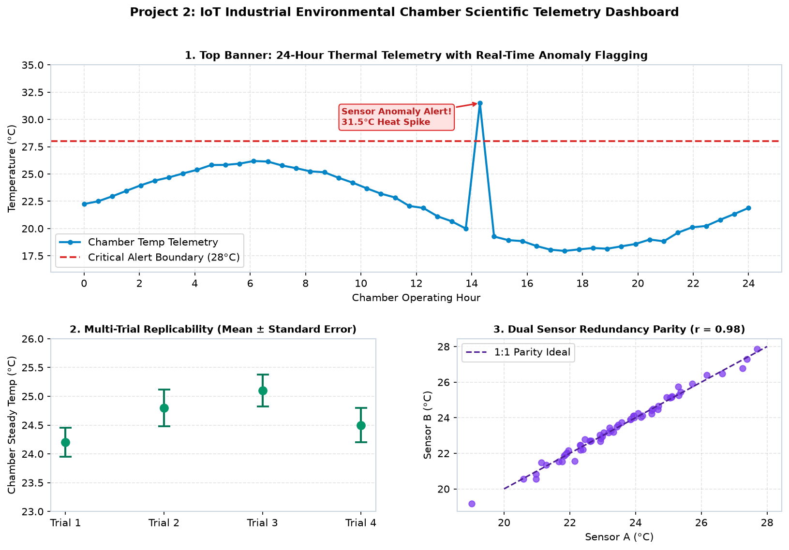
import matplotlib.pyplot as plt
import matplotlib.gridspec as gridspec
import numpy as np
fig = plt.figure(figsize=(12, 7.5))
gs = gridspec.GridSpec(2, 2, height_ratios=[1.2, 1.0], hspace=0.35, wspace=0.25)
hours = np.linspace(0, 24, 48)
temp = 22.0 + 4.0 * np.sin(np.pi * hours / 12) + np.random.normal(0, 0.15, 48)
temp[28] = 31.5 # Spike
# Top Banner
ax_top = fig.add_subplot(gs[0, :])
ax_top.plot(hours, temp, color='#0284c7', marker='o', markersize=4)
ax_top.axhline(28.0, color='#dc2626', linestyle='--', label='Alert Boundary (28°C)')
ax_top.set_ylim(16, 35)
ax_top.annotate('Sensor Anomaly Alert! 31.5°C Heat Spike', xy=(hours[28], 31.5), xytext=(hours[28]-5, 29.5),
arrowprops=dict(facecolor='#dc2626', arrowstyle='->', lw=1.5),
fontweight='bold', color='#b91c1c')
ax_top.set_title("1. 24-Hour Chamber Thermal Telemetry", fontweight='bold')
ax_top.legend(loc='lower left')
# Bottom Left: Error bars
trials = ['Trial 1', 'Trial 2', 'Trial 3', 'Trial 4']
means = [24.2, 24.8, 25.1, 24.5]
sems = [0.25, 0.32, 0.28, 0.30]
ax_b1 = fig.add_subplot(gs[1, 0])
ax_b1.errorbar(trials, means, yerr=sems, fmt='o', color='#059669', capsize=6, markersize=8)
ax_b1.set_title("2. Trial Replicability (Mean ± SE)", fontweight='bold')
# Bottom Right: Parity scatter
sa = np.random.normal(24, 2, 60)
sb = sa + np.random.normal(0, 0.2, 60)
ax_b2 = fig.add_subplot(gs[1, 1])
ax_b2.scatter(sa, sb, color='#7c3aed', alpha=0.7)
ax_b2.plot([20, 28], [20, 28], '--', color='#4c1d95', label='1:1 Parity')
ax_b2.set_title("3. Dual Sensor Redundancy Parity (r=0.98)", fontweight='bold')
ax_b2.legend()
plt.show()Scenario: Web platform engineering aur business leadership ke liye log-normal response latency distribution (with P95 & Median), regional delivery transit time boxplots, price elasticity conversion scatter, aur average order value (AOV) 95% confidence intervals.
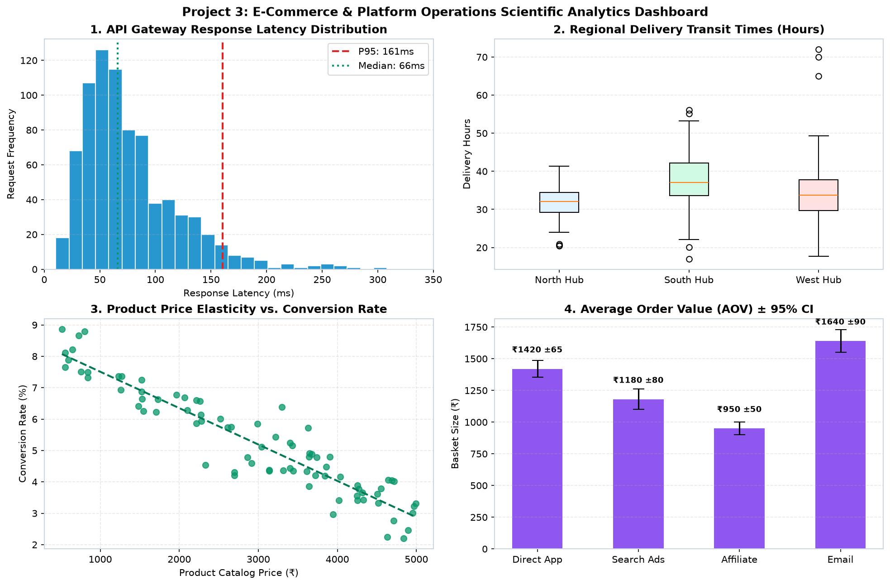
import matplotlib.pyplot as plt
import numpy as np
fig, axes = plt.subplots(2, 2, figsize=(12, 8), constrained_layout=True)
# 1. Log-normal latency
lat = np.random.lognormal(mean=4.2, sigma=0.55, size=800)
axes[0, 0].hist(lat, bins=35, color='#0284c7', edgecolor='white')
axes[0, 0].axvline(np.percentile(lat, 95), color='#dc2626', linestyle='--', label=f"P95: {np.percentile(lat, 95):.0f}ms")
axes[0, 0].set_title("1. API Gateway Response Latency", fontweight='bold')
axes[0, 0].legend()
# 2. Regional Boxplot
r1, r2, r3 = np.random.normal(32, 5, 80), np.random.normal(38, 7, 80), np.random.normal(34, 6, 80)
axes[0, 1].boxplot([r1, r2, r3], tick_labels=['North', 'South', 'West'], patch_artist=True)
axes[0, 1].set_title("2. Regional Delivery Times (Hours)", fontweight='bold')
# 3. Price Elasticity Scatter
p = np.random.uniform(500, 5000, 80)
conv = 8.5 - 0.0011 * p + np.random.normal(0, 0.6, 80)
axes[1, 0].scatter(p, conv, color='#059669', alpha=0.75)
axes[1, 0].set_title("3. Price vs. Conversion Rate Elasticity", fontweight='bold')
# 4. AOV with 95% CI
segs = ['Direct', 'Ads', 'Affiliate', 'Email']
aov_m = [1420, 1180, 950, 1640]
aov_ci = [65, 80, 50, 90]
axes[1, 1].bar(segs, aov_m, yerr=aov_ci, capsize=6, color='#7c3aed', alpha=0.85, width=0.5)
axes[1, 1].set_title("4. Average Order Value ± 95% CI (₹)", fontweight='bold')
plt.show()| Mistake / Error | Kyun Hota Hai? (Root Cause) | Instant Fix |
|---|---|---|
| Deceptive Truncated Y-Axis | Y-axis ko 90 se start kar diya, jisse 2% difference 5 guna bada dikhta hai. | Bar charts mein hamesha zero-baseline use karein: ylim=(0, max). |
| Confusing SD, SE & CI | Standard Deviation (data spread), Standard Error (mean uncertainty), aur CI (confidence) ko mix kar diya. | Always document clearly: "yerr represents 95% Confidence Interval". |
| Heatmap Without Colorbar | imshow() call kiya lekin fig.colorbar() bhool gaye. Colors ka scale unreadable ho gaya. |
Always attach a labeled colorbar: fig.colorbar(im, ax=ax). |
| Blindly Deleting Outliers | Jo data 1.5×IQR se bahar tha usse error maan kar delete kar diya. | Outliers ko highlight karke investigate karein (often system anomalies/spikes). |
Scientific publication ya mobile educational notes ke liye figures save karte waqt ye standards follow karein:
import matplotlib.pyplot as plt
fig, ax = plt.subplots(figsize=(8, 5))
# ... plot statistical analysis ...
# Save with 150 DPI and tight bounding box
fig.savefig("assets/scientific_report.png", dpi=150, bbox_inches="tight", pad_inches=0.1)
plt.close(fig)| Function | Purpose | Code Snippet |
|---|---|---|
ax.hist(data, bins=25) |
Plots continuous frequency distribution | ax.hist(scores, bins=25, edgecolor='white') |
ax.boxplot(data) |
Displays median, quartiles & outliers | ax.boxplot([d1, d2], patch_artist=True) |
ax.violinplot(data) |
Shows KDE distribution shape & modes | ax.violinplot(data, showmedians=True) |
ax.imshow(corr_matrix) |
Renders correlation heatmap | im = ax.imshow(corr, cmap='Blues') |
ax.errorbar(x, y, yerr=...) |
Quantifies uncertainty or confidence intervals | ax.errorbar(x, y, yerr=ci, capsize=5) |
barwidthcapsizecrosslinefencealpha=0.6 and edgecolor='white'.ax.hist(d1, bins=20, alpha=0.6, label='A'); ax.hist(d2, bins=20, alpha=0.6, label='B').
ax.boxplot(..., patch_artist=True, medianprops=dict(color='red')).
imshow() se render karein, aur har cell mein numeric value text print karein.ax.text(j, i, f"{val:.2f}", ...).
ax.errorbar(x, y, yerr=[lower_err, upper_err], capsize=5).
upper_fence ke oopar wale points ko red circles se highlight karein.q3 = np.percentile(y, 75); iqr = q3 - np.percentile(y, 25); fence = q3 + 1.5 * iqr.
mpl_toolkits.mplot3d!